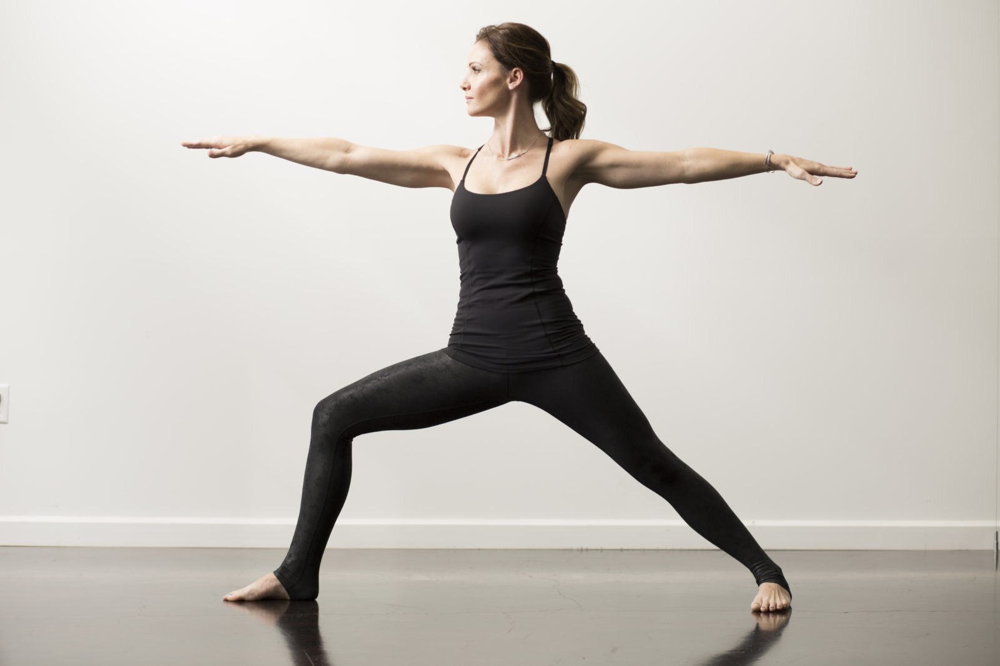

Yoga Poses
Discover some amazing yoga poses that help with flexibility, strength, and relaxation.
Downward Dog - This pose stretches the hamstrings, calves, and shoulders, while strengthening the arms and legs.

Tree Pose - A balancing pose that strengthens the legs, opens the hips, and enhances focus and concentration.

Warrior II - This powerful pose builds strength in the legs, improves stamina, and enhances mental focus.